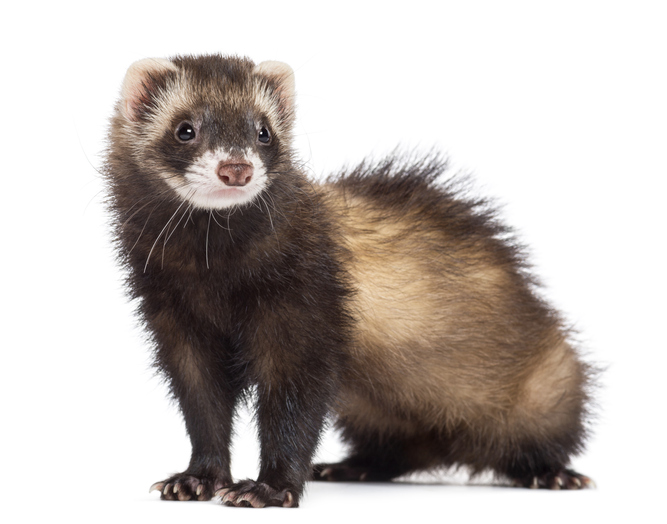

The ferret (Mustela putorius furo) is the domesticated form of the European polecat, a mammal belonging to the same genus as the weasel, Mustela, in the family Mustelidae.
Their fur is typically brown, black, white, or mixed. They have an average length of 51 cm (20 in), including a 13 cm (5.1 in) tail, weigh about 1.5–4 pounds (0.7–2 kg), and have a natural lifespan of 7 to 10 years.[2] Ferrets are sexually dimorphic predators, with males being substantially larger than females.
The history of the ferret's domestication is uncertain, like that of most other domestic animals, but it is likely that they have been domesticated for at least 2,500 years. They are still used for hunting rabbits in some parts of the world, but increasingly they are kept only as pets.
The history of the ferret's domestication is uncertain, like that of most other domestic animals, but it is likely that they have been domesticated for at least 2,500 years. They are still used for hunting rabbits in some parts of the world, but increasingly they are kept only as pets.
As a result, New Zealand and some other parts of the world have imposed restrictions on the keeping of ferrets.
It have a typical mustelid body-shape, being long and slender. Their average length is about 50 cm (20 in) including a 13 cm (5.1 in) tail. Their pelage has various colorations including brown, black, white or mixed. They weigh between 0.7 and 2.0 kg (1.5 and 4.4 lb) and are sexually dimorphic as the males are substantially larger than females.
Ferrets are induced ovulators.
Ferrets spend 14–18 hours a day asleep and are most active around the hours of dawn and dusk, meaning they are crepuscular.
Most ferrets will live happily in social groups. They are territorial, like to burrow, and prefer to sleep in an enclosed area.
